Main idea
Real world data is complex, so its representation on a computer should be done with careful thought regarding structure. Big data is a current research type. Data needs to be stored, searched, and processed; algorithms outline methods to do so.
Simple data types and control
int, long, float, double, char... (atoms of data structure)
arithmetic, logic, statements, if-then-else, blocks... (atoms of control flow)
Queues and Stacks
FIFO (first in, first out) and LIFO (last in, first out) respectively.
Data structures
Array, queue, stack, list, graph etc.
Syntax
Main idea
Programming a computer means telling it what to do, and this is done through a language. Programming languages are formally defined using, for example, syntactic rules. A single mistake would break the code. Semantic gives meaning to code, and it interprets words and constructs in programming languages.
Many languages have similar constructs which are fundamental in computing, such as arithmetic, logic, loops, if-then-else. A good understanding of how these languages are defined leads to more efficient code and coding.
Backus Naur Form (EBNF)
Used to express the structural form of languages. EBNF "rules" express synactic elements in terms of other elements and terminals. Elements are also called syntactic variables or syntactic categories. Terminals are strings.
Diagrams
S ::= NP VP ;
NP ::= DET NOUN | NAME ;
DET ::= "a" | "an" | "the" ;
NOUN ::= "dog" | "house" | "pen" | "animal" ;
NAME ::= "John" | "Mary" | "Bob" ;
VP ::= "sleeps" | "sings" | "is" ADJ | “is” NP | "has" NP ;
ADJ ::= "large" | "red" | "scary" ;
DIGIT ::= "0" | "1" | "2" | "3" | ... | "9" ;
INT ::= DIGIT+ ;
FLOAT ::= INT ("." INT? )? ;
“+” means “one or more of an expression”
“?” means “zero or one”; “*” means “zero or more”
expression ::= term ( (“+” | “-” ) term )* ;
term ::= factor ( (“*” | “/”) factor )* ;
factor ::= number | "(" expression ")";
expression ::= term ( (“+” | “-” ) term )* ;
term ::= factor ( (“*” | “/”) factor )* ;
factor ::= number ;
expression ::= term ( (“+” | “-” ) term )* ;
term ::= factor ( (“*” | “/”) factor )* ;
factor ::= number | "("expression ")" ;
bool_exp ::= or_exp ( “||” or_exp )* ;
or_exp ::= atom ( “&&” atom )* ;
atom ::= IDENT | ”false | “true” | “(“ bool_exp “)” ;
IDENT ::= “a” | “b” | “c” ;
Main idea
Graphical tools can help with visualizing the structure of code. Flow diagrams and structograms visualize control flow.
Well designed code is easier to maintain and communicate, either between members of a team or to customers. Good planning reduces trial and error coding in favor of a more systematic approach. Visualization helps beginners understand code better.
Control flow
CPUs are sequential machines, and perform one operation at a time. Statements organize the flow of control (which operations are performed in what order).
Major control elements: statements and sequences, conditional branching (if-then, if-else, switch), repetition (for-loop, while-loop, repeat-until), and jumps (goto, break, continue).
Flow diagrams
Flow diagrams were an early tool to visualize the flow of control of a program. They are still used to teach beginners, but they aren't used in software development anymore. They are only usable for small size programs, do not support for-loops and while-loops very well, and lead to an uncontrolled use of "goto".
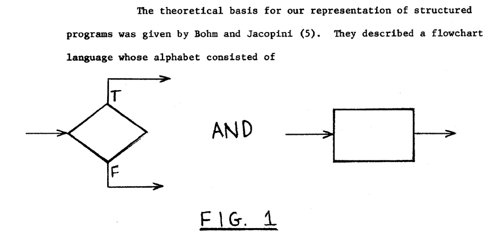
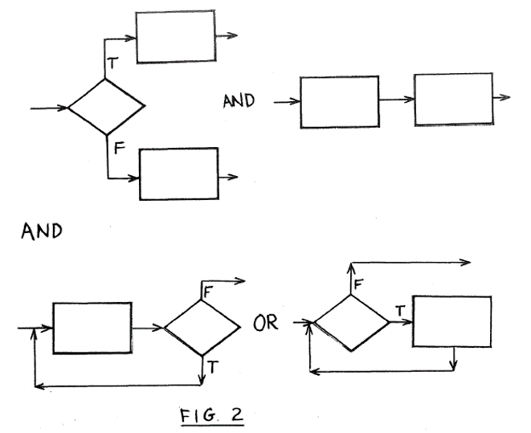
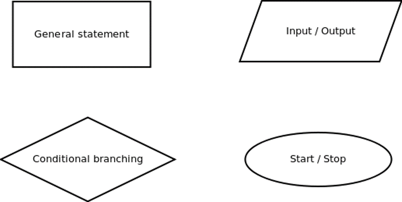
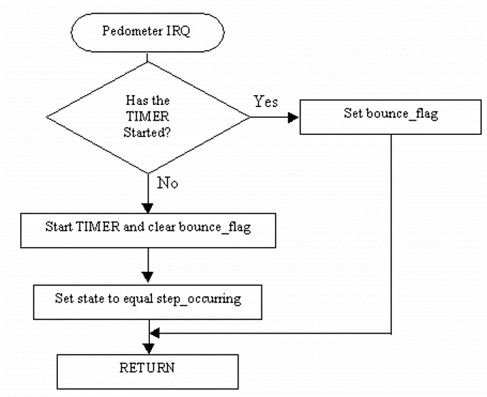
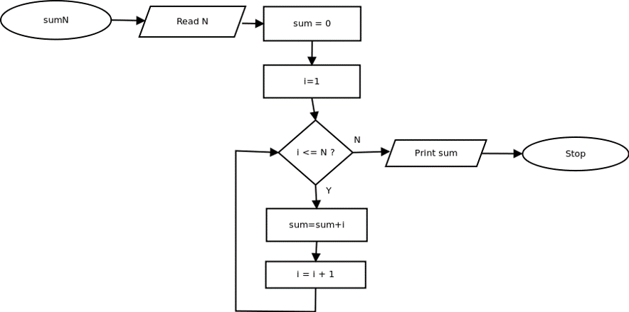
Structograms (Nassi-Shneiderman Diagrams)
Break problems into pieces according to the problem structure, break pieces into smaller pieces, don't refer to specific language elements early, pieces interact via "interfaces" but are otherwise independent. Project -> Modules -> Functions -> Fragments.
Process: Can contain a single statement or a bigger functional block depending on the resolution. Flow enters on top and exits on bottom of the element.
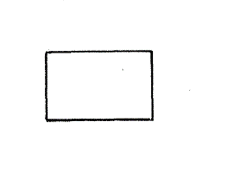
Decision: If condition B is true, do the THEN-clause, otherwise do the ELSE-clause. The clauses are process blocks.
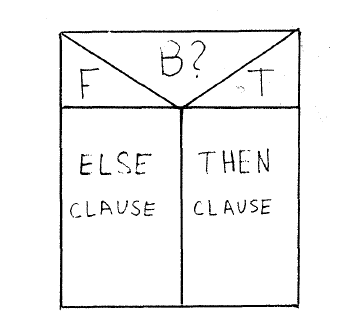
For-Loop & While-loop: A process block within a loop, where the loop's exit condition is evaluated at the beginning.
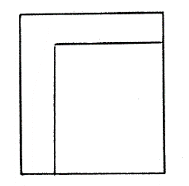
Do-While-Loop: A loop where the exit condition is checked at the end.
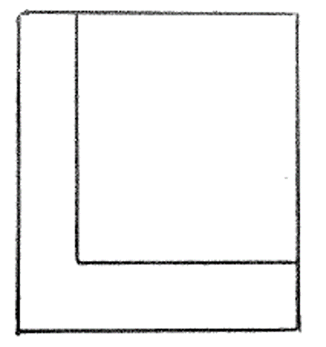
Break / Continue: Similar to for-loops and while-loops.
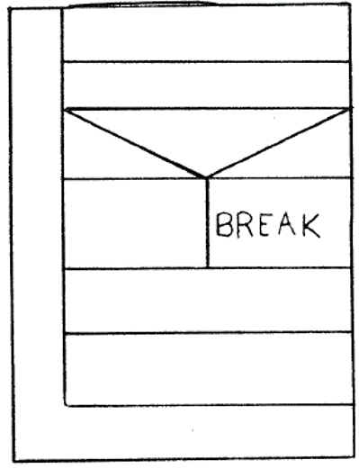
Example:
 Nested Loops:
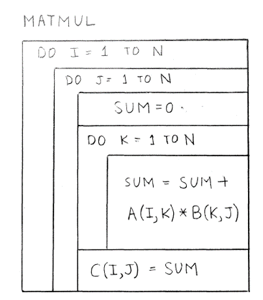
Example Sum:
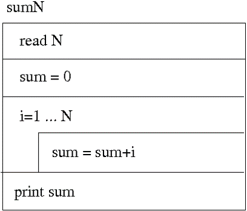
Example Checking for Prime Number:
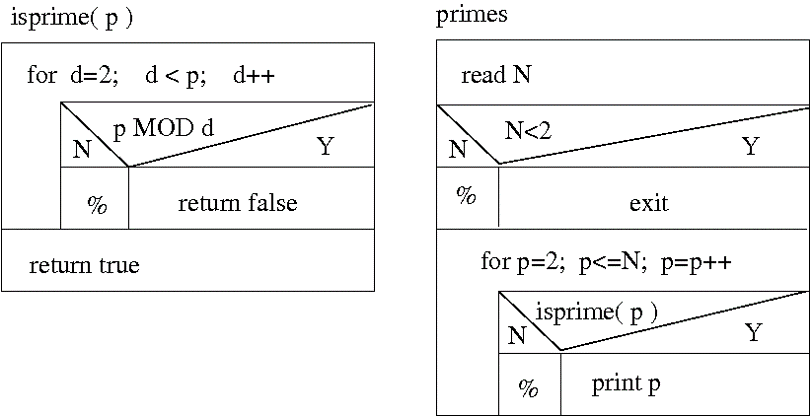
Nested Loops:
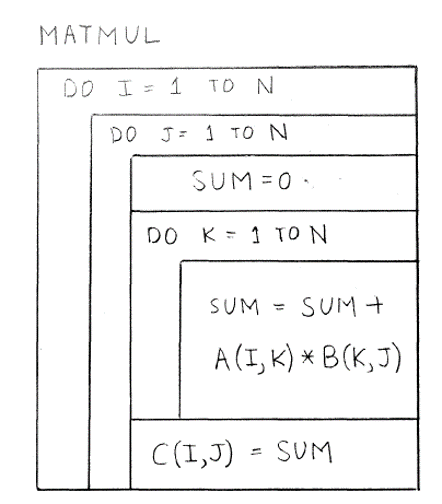
Example Sum:
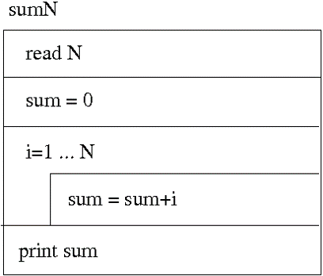
Example Checking for Prime Number:
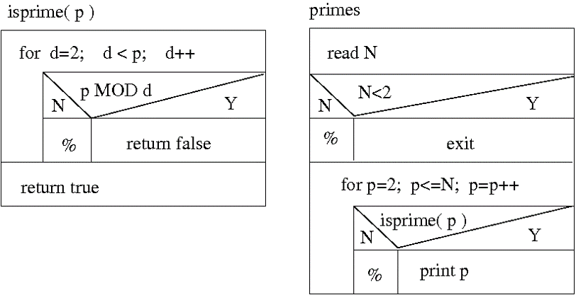
Nested Loops:
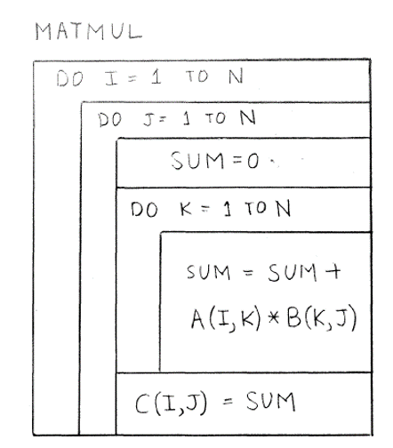
Example Sum:
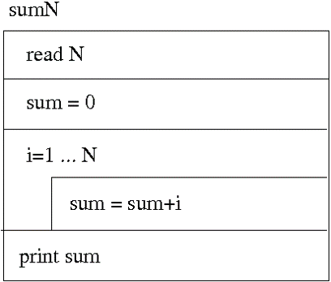
Example Checking for Prime Number:
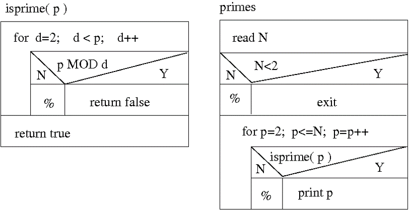